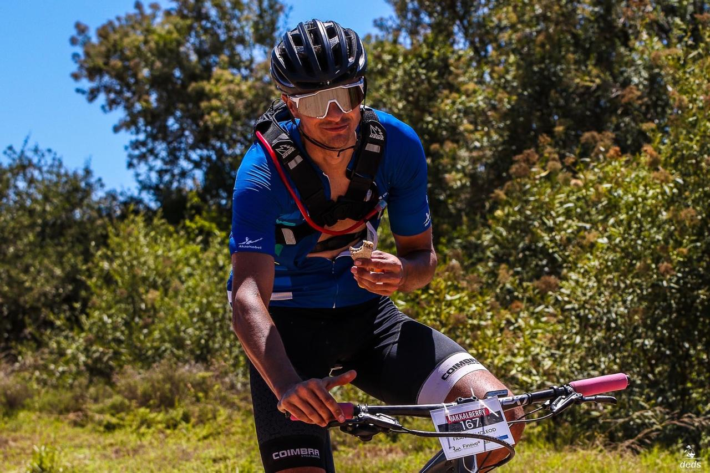

Hello, Here’s a bit about who I am and what I stand for.
I didn’t just stumble into the world of bicycles; I live and breathe it. Whether tearing up mountain trails on my MTB, slicing through the wind on my road bike, or simply cruising through city streets on my commute, cycling is my lifestyle. It’s what gets me out of bed in the morning and keeps me energized all day.
As a young entrepreneur, I’m on a mission to turn my lifelong passion into something tangible: a community-focused bike shop that’s more than just a retail space. It’s a hub for fellow cyclists—a place where cyclist can meet and enjoy a laugh together, and where all riders can finds the support they need.
What sets me apart? It’s not just about selling bikes; it’s about sharing my love and knowledge of cycling with you.
So, why choose Re-Ride? Because behind every pedal stroke and every gear change is someone who understands and shares your passion. Because supporting local businesses means supporting someone’s dream. Because here, you’re not just buying a bike; you’re investing in a lifestyle.
Join me on this journey. Let’s ride together.
